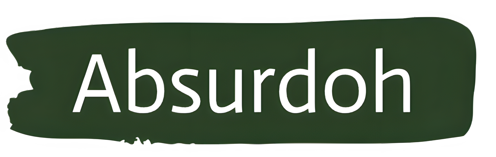
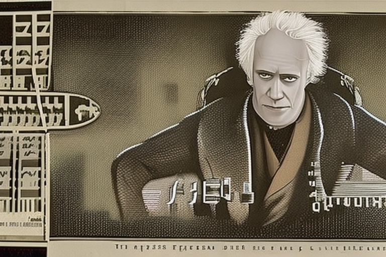

Filosofía del Absurdo
Tu Vida es Absurda
Arthur Schopenhauer
Gdansk, 22 de febrero de 1788-Fráncfort del Meno, Reino de Prusia, 21 de septiembre de 1860) fue un filósofo alemán, considerado uno de los más brillantes del siglo xix y de mayor importancia en la filosofía occidental, de los primeros en manifestarse abiertamente como ateo, así como el máximo representante del pesimismo filosófico.En su sistema reunió teoría del conocimiento, metafísica, estética y ética a partir de un mismo eje, caracterizando al mundo de los fenómenos como la manifestación de una voluntad ciega e irracional, la cual sería la esencia del mundo o noúmeno.
El mundo está regido por una voluntad incansable e incandescente que nos convierte en máquinas deseantes. Deseamos incansablemente y, tras la satisfacción de un deseo, espera siempre uno nuevo, que a su vez busca ser satisfecho; una dinámica que nos vapulea y maltrata sin descanso y que nos sitúa entre dos polos inevitables: el sufrimiento y el aburrimiento. Por eso, Schopenhauer explica, apelando a la autoridad de Aristóteles, que la persona sabia no busca una inaccesible felicidad, sino más bien la ausencia de dolor. De esta forma, el autor alemán nos invita «a dirigir nuestra atención no a los placeres y comodidades de la vida, sino a los medios de evitar, en la medida de lo posible, sus innumerables males». Por eso, quien quiera hacer balance de su vida pasada, ha de tener mucho más en cuenta los males de los que se ha librado que las alegrías de que las que ha disfrutado.
Bibliografía Esencial
El mundo como voluntad y representación